Рулевые весла
Их увлекала музыка,
а не улов сельдей.
От Мурманска до Мурманска
ходили по семь дней.
Они ходили без руля.
Один из них - грузин
свой нос, как руль, употреблял,
в пучину погрузив!
В. А. Соснора. Песня, которая называется «Не пой»
Предыдущий пост мы закончили, высказав намерение в следующий раз обсудить стратегемы Полиэна, в которых упоминаются рассмотренные нами эпотиды. Однако при компоновке текста нового поста стало ясно, что он принимает излишне сложную структуру, поэтому решил разделить его на две части. Первую, посвященную рулевым веслам античных кораблей, начнем сегодня.
Когда появился первый руль на гребном судне? Можем ответить на этот вопрос лишь умозрительно: когда размер судна и число гребцов выросло настолько, что уже невозможно стало согласованным действием только гребных весел направлять судно по нужному курсу. Когда выгодней стало иметь специального человека на борту, который держал бы направление с помощью отдельного инструмента – рулевого весла, чем путем длительных тренировок добиваться согласованного, синхронного действия всех гребцов, продвигающих судно вперед и одновременно удерживающих его на курсе.
Определенней о том, что собой представляло рулевое весло мы можем сказать, начиная с того периода истории корабля, от которого сохранились документальные и изобразительные свидетельства. Но здесь нас подстерегает разочарование: имеются многочисленные изображения рулевых весел и их крепления к корпусу корабля периода Египетский царств, имеем мы и артефакты, иллюстрирующие конструкцию рулевых весел у викингов, но вот свидетельств периода интересующих нас древнегреческих и римских гребных кораблей сохранилось очень мало.
Рулевые весла у египтян и викингов имели одну общую черту: каждое из них крепилось в двух точках.
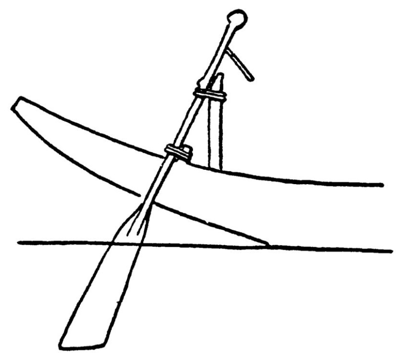
Т.е. это было уже не обычное весло, пусть и увеличенных размеров, а фактически тот же руль, который используется в наше время и схему которого, как писал La Roërie, можно изобразить на кофейном столике с помощью трех спичек: перо руля, баллер и румпель. Принципиальное отличие между древним и современным рулем в том лишь, что сейчас баллер руля располагается вертикально, а раньше ось рулевого весла была наклонена под углом к поверхности воды.
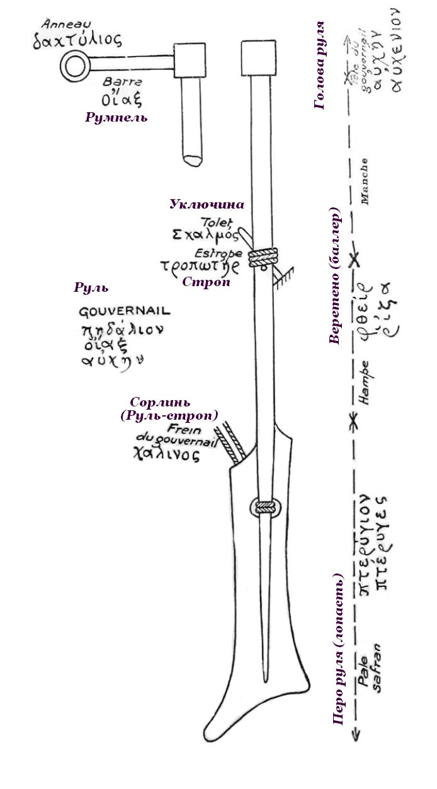
Во времена Древнего Царства Египта руль фиксировался в диаметральной плоскости судна, с помощью двух тросовых петель, в которых он мог вращаться вокруг своей оси.
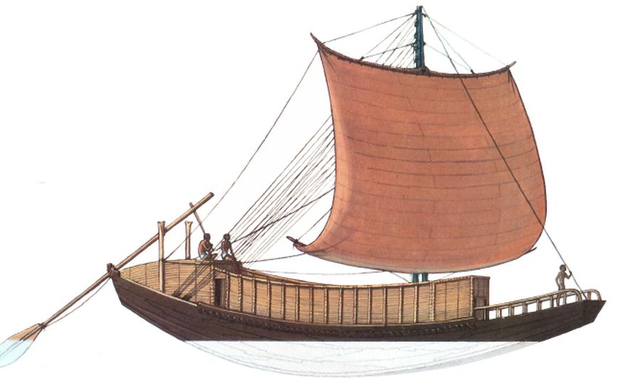
Одна из петель крепилась поблизости от кормовой оконечности судна, другая – на специально установленной стойке на некотором расстоянии от кормы. Иногда устанавливали два таких рулевых весла, по одному на каждый борт.
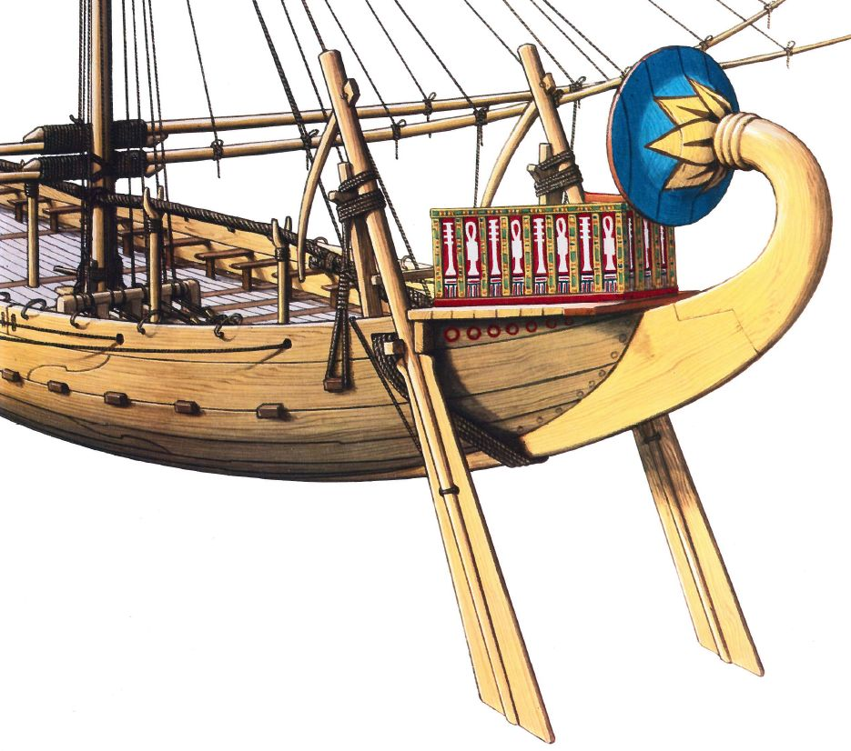
На некоторых дошедших до нас моделях египетских кораблей можно проследить эволюцию этого крепления руля, когда нижний тросовый узел постепенно заменялся своего рода деревянным подшипником скольжения, прикрепленным к корпусу судна.
Еще одно сходство между рулевыми веслами египтян и викингов: и те и другие имели румпели. Но только у древних египтян румпель находился высоко и рулевой управлял веслом стоя
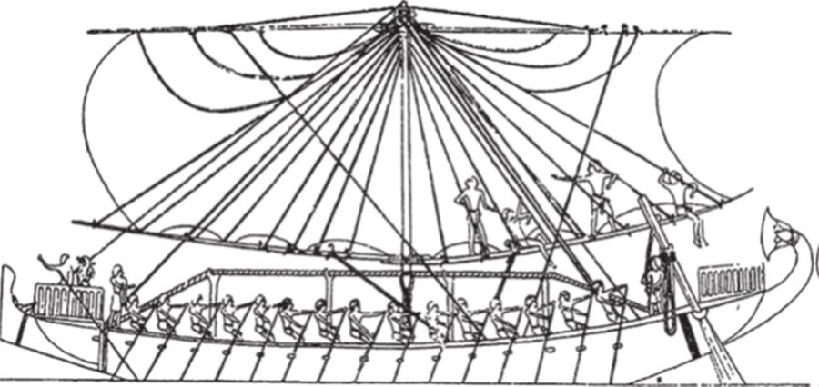
или со специальной платформы
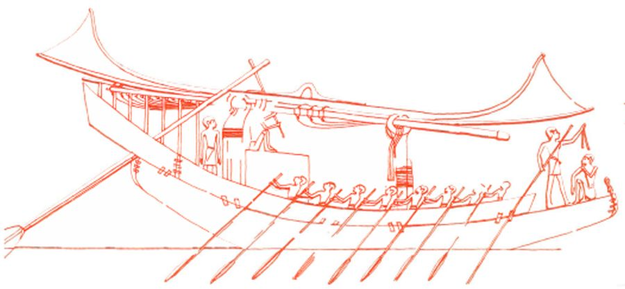
а у викингов румпель находился достаточно низко, был направлен вовнутрь корпуса над планширем, и рулевой управлял кораблем, сидя между румпелем и кормой: отталкивал румпель от себя, чтобы повернуть налево, или тянул его на себя для поворота направо.
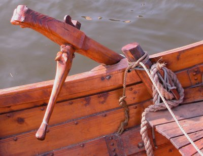
Были, конечно, и исключения из этого правила, но мы-то знаем, для чего существуют исключения.
Что касается древнегреческих и римских рулевых весел, то нам известно о них очень мало, несмотря на наличие значительного количества изображений различных жанров.
Рулевое весло называлось πηδάλιον на греческом и gubernaculum на латинском языке. (хотя и то и другое слово могло означать просто «руль»). Веретено греки называли αὐχήν, буквально «шея». Румпель это иногда κάμαξ, но чаще οἴαξ.
Как правило, греческие суда, как крупные так и небольшие, имели по два рулевых весла. Румпели на рулях самых первых по времени кораблей показаны не часто, а когда были показаны, то лишь схематично.
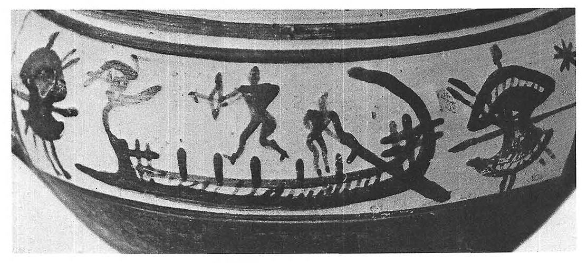
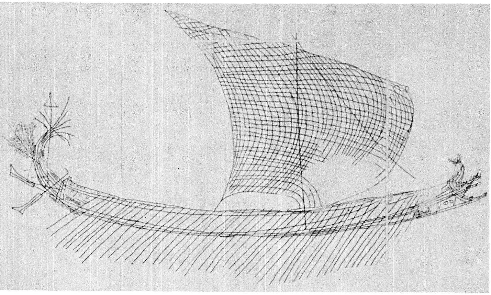
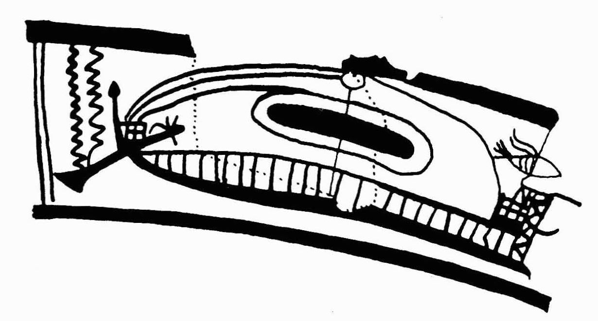
Поэтому трудно сказать, какими движениями руля осуществлялось управление судном. Моррисон первоначально считал, что рулевое весло двигалось в ту или другую сторону, совершало 'lateral movement' (боковые движения). Однако проанализировав работы Пиндара, Эсхила и Еврипида, он и его соавторы позже пришли к выводу, что
what has commonly been called the steering oar was a rudder, turned on its axis, and controlled by a tiller.
То, что обычно называли рулевым веслом, было просто рулем, вращающимся вокруг своей оси с помощью румпеля.
Morrison, Coates, Rankov (2000), The Athenian Trireme, p.174
Casson с самого начала считал, что рулевое весло у греческих триер совершало вращательные движения вокруг оси, проходящей через веретено весла, т.е. управляли им так же, как у египтян и викингов. Об этом свидетельствует прежде всего способ крепления рулевого весла на греческих и римских судах.
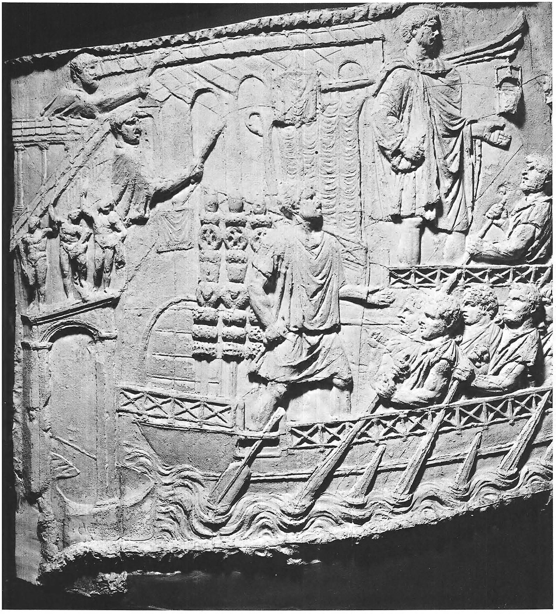
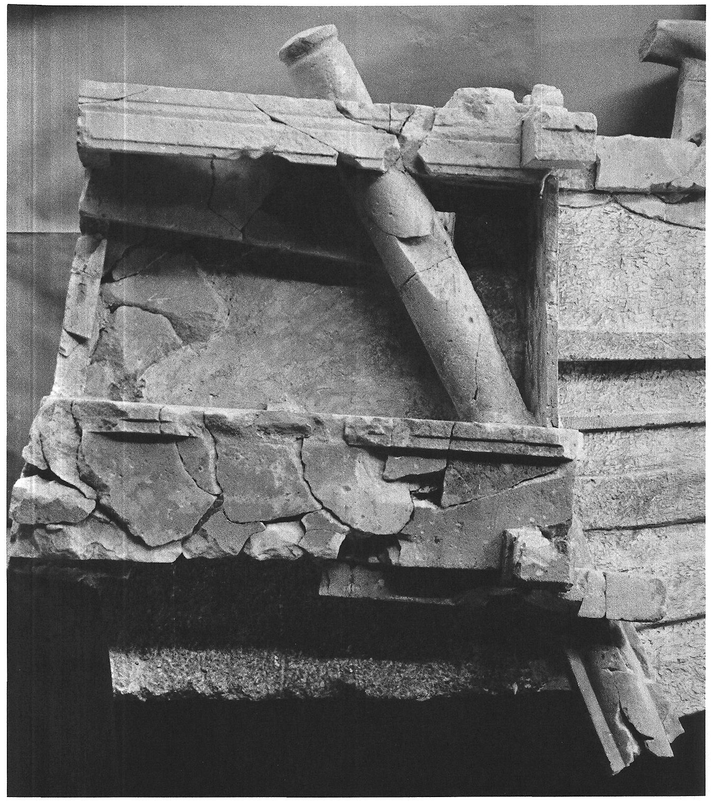
Румпель вставляли в гнездо в верхней части баллера, или веретена, рулевого весла
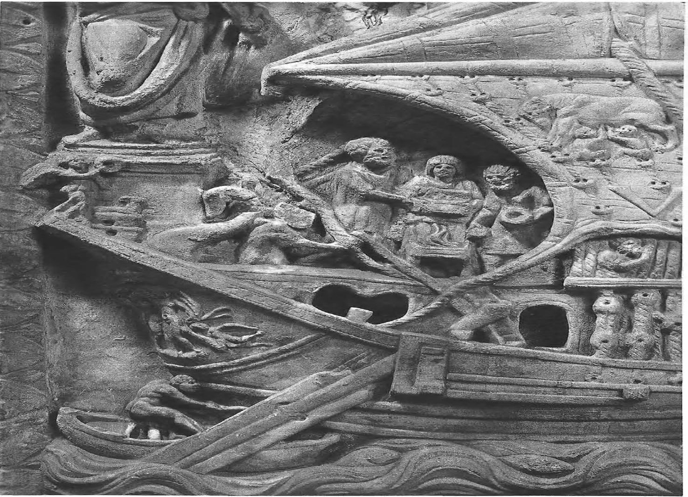
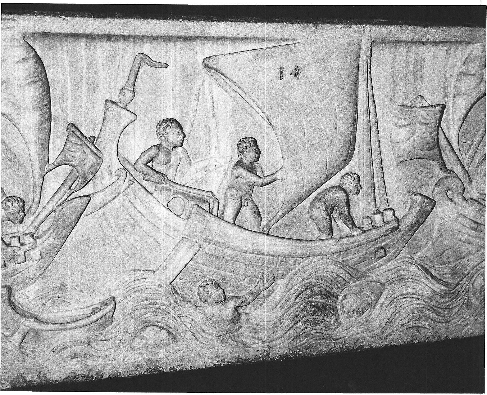
и, как рычагом, вращали баллер и весь руль вокруг своей оси. Меняя угол поворота лопасти относительно корпуса корабля, осуществляли изменение направления его движения. Лопасть, или перо руля, имело несимметричную относительно оси форму, как и у современного руля. Однако на античных изображениях художники часто изображали его симметричным, что диктовалось скорее соображениями эстетики, чем техническими характеристиками руля. Именно несимметричная форма лопасти служит еще одним подтверждением того факта, что управляли веслом путем его вращения, а не движения в стороны.
Мы видели раньше, что военные гребные корабли античности часто вытаскивали на берег или на специально построенные эллинги. Чтобы во время этой операции не повредить руль, его поднимали в горизонтальное положение с помощью специальной оснастки
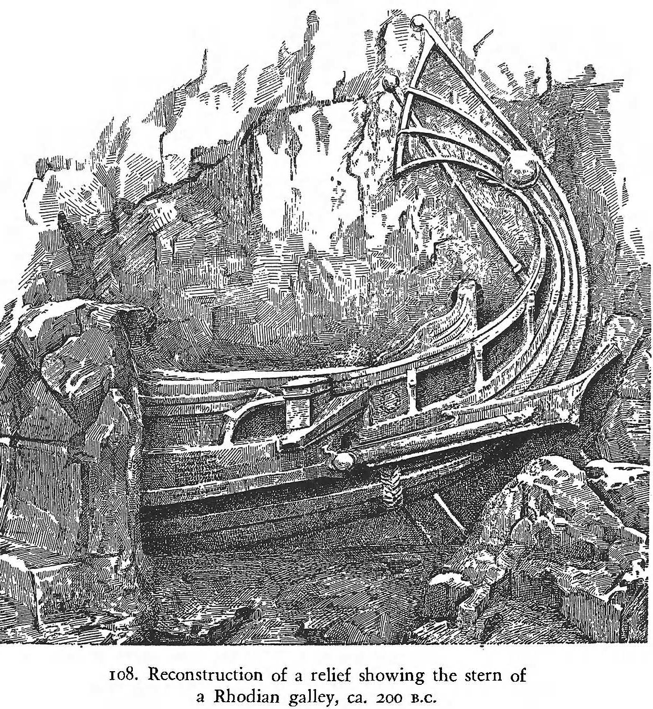
Мы перевели название этой снасти на русский язык как сорлинь, принимая во внимание определение, данное для нее у Даля: «прочная веревка, которой руль наслаби привязан к судну, на случай, если бы его вышибло из петель». Конечно, назначение сорлиня на античных кораблях, как мы только что видели, более широкое.
После появления на античных судах постицы («весельного ящика»), рулевое весло стали крепить к корме от нее, как это видно на граффити из Делоса (первая половина I в. до н.э)
Косвенное подтверждение того факта, что рулевое весло крепилось обычно за «весельным ящиком» мы рассмотрим, когда будем обсуждать стратегемы Полиэна.
И коротко о размерах рулевого весла. Приведем рисунок, дающий сравнение рулевого весла с реплики афинской триеры Олимпиа и рулевого весла корабля императора Калигулы (середина I в. н.э.), поднятого со дна озера Неми в Италии. Он дает наглядное представление о размерах и весе стандартного рулевого весла и максимального в своем роде образца
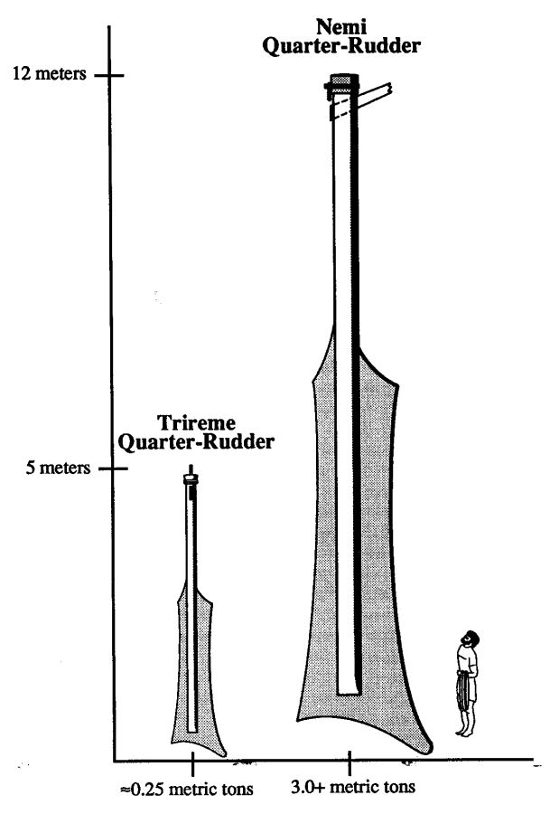
О том, как выглядело рулевое весло длиной 11,3 м на корабле Калигулы дает представление реконструкция судна. Надстройка на корабле – апартаменты императора.
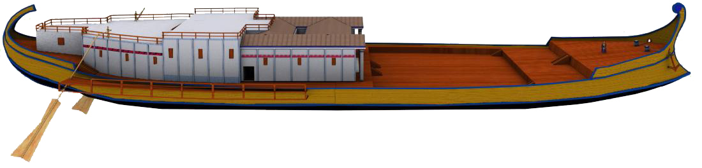
Продолжим в следующий раз.